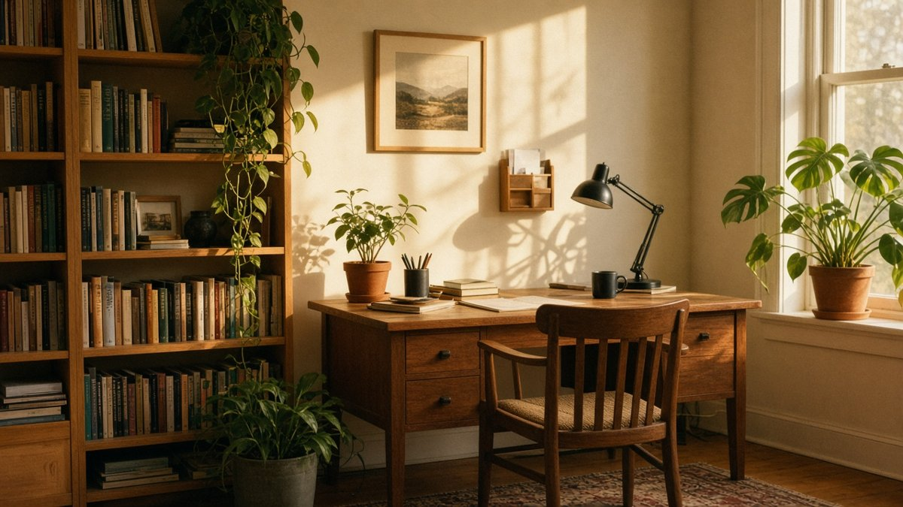

Hur mycket tid kan du vinna tillbaka varje dag – utan att vara
teknisk? Välj dina vardagstjuvar.
25minuter / dag
≈
12,5timmar / månad
Ett räkneexempel, inget löfte. Räknat på 30 dagar. Din vardag,
dina förutsättningar.
LAGOM ÄR OCKSÅ EN SUPERKRAFT
Du behöver inte kunna allt om AI. Du behöver bara hitta
det som hjälper dig.
01
DEL 1 · GRUNDSKOLAN
Okej, men vad är AI?
Tre minuter. Tre enkla bilder. Inga konstiga förkortningar.
◷ 3 min
AI är program som lär sig mönster från exempel. De kan föreslå text,
tolka bilder och hjälpa till med uppgifter. De tänker inte som vi –
men kan vara riktigt bra att tänka tillsammans med.
”Tänk hjälpsam kollega. Med lite väl gott självförtroende
ibland.”
DU FRÅGAR. AI FÖRESLÅR.
Som att tänka högt. Fast någon svarar.
Du skriver en fråga, får ett förslag och bollar vidare. Be om en
veckomeny, hjälp med ett knepigt mejl eller en enkel förklaring.
Du håller i ratten.
”Jag har linser, tomater och 20 minuter. Vad blir det till
middag?”
Bra att veta: AI kan låta säker och ändå ha fel. Dubbelkolla det
viktiga.
Visar 5 verktyg. Personligheterna är förenklade intryck. Funktioner
och gränser beror på plan, region och behörigheter. Länkarna går
till tjänsternas egna villkor och priser.
03
DEL 3 · VÄGSKÄLET
Vad vill du ha mer tid till?
Välj ditt spår. Börja med en liten sak. Resten kan vänta.
Din vardag bestämmer.

KODACHROME 64 • MER PLATS FÖR VARDAGEN
🏠 PRIVATLIVET · BÖRJA SMÅTT
Bygg din egen digitala butler.
Tänk om någon höll koll på det lilla, så att du fick plats med det
stora? Börja här, ett steg i taget.
01 Börja med ett lugnare mejlflöde
+
Klistra in ett ofarligt mejl och be om en sammanfattning och
ett svarsutkast. När det känns bra: undersök en mejlkoppling,
börja med läsbehörighet och godkänn alltid utskick själv.
02 Ge kalendern lite andrum
+
Beskriv en vanlig vecka utan privata detaljer. Be om förslag
på fokusblock, pauser och restid. Med en godkänd
kalenderkoppling kan en agent föreslå nya tider när möten
krockar.
03 Samla dina påminnelser
+
Samla dina lösa listor och be AI gruppera dem i ”idag”, ”den
här veckan” och ”kan vänta”. Välj tre saker. Lägg sedan in
påminnelserna i den app du redan använder.
04 Låt matlådorna planera sig
+
Skriv vad som finns i kylen, hur många ni är och vad ni
gillar. Be om fyra enkla middagar som ger lunchlådor, plus en
inköpslista sorterad efter butikens avdelningar.
05 Få överblick över räkningarna
+
Gör en enkel lista med förfallodatum och belopp. Be AI föreslå
en månadsrutin och påminnelser. Dela inga bankinloggningar.
Kontrollera belopp och genomför betalningen i din bank.
💼 JOBBET · MER PLATS FÖR BRA ARBETE
Slipp det tråkiga kontorsarbetet.
Färre kopierade anteckningar. Färre fram-och-tillbaka-mejl. Mer
tid till det du faktiskt är bra på.
01 Schemalägg med lite framförhållning
+
Låt en godkänd kalenderagent hitta fokusblock och lägga in
pauser. Börja med förslag och bekräfta ändringarna själv.
02 Lös möteskrockar innan de händer
+
Med rätt behörighet kan AI identifiera krockar och föreslå
alternativa tider utifrån deltagarnas tillgänglighet. Du
godkänner innan något bokas om.
03 Avsluta mötet med en tydlig plan
+
Be ett av företaget godkänt verktyg sammanfatta
anteckningarna: beslut, ansvarig och nästa steg. Be om
deltagarnas medgivande innan inspelning och kontrollera
sammanfattningen.
04 Få mejlutkast i din egen röst
+
Visa två avpersonifierade textexempel. Beskriv mottagaren och
vad du vill uppnå. Be om ett kort utkast, redigera och skicka
själv.
🚀 FRAMKANT · NYFIKEN UTAN STRESS
Labbet & framtiden.
Här får det vara lite mer experiment. Du behöver inte göra allt.
Välj en idé som får det att klia i fingrarna.
01 En natt-agent med pass kl. 02:00
+
Låt en schemalagd agent läsa morgondagens kalender, upptäcka
luckor och förbereda ett förslag till dagsplan. Den behöver en
tjänst som kör i bakgrunden och uttryckligt godkända
kopplingar.
02 Din egen morgontidning kl. 06:00
+
Välj tre ämnen och en handfull trovärdiga källor. Låt en agent
sammanfatta med länkar, sortera bort dubbletter och leverera
ett kort morgonbrev. Kontrollera att schemaläggning och
utskick stöds av din tjänst.
03 Flytta hem en liten modell
+
Prova en liten öppen modell i LM Studio eller Ollama. Ladda
ned den, välj lokal körning och testa ett ofarligt dokument
offline. Hastigheten beror på datorns minne och
beräkningskraft.
04 Bygg en 3D- eller kod-pipeline
+
Knyt ihop ett avgränsat flöde: brief → kodutkast → test →
manuell granskning. För 3D: börja med att sortera referenser
eller skapa ett enkelt skript. Spara originalen och godkänn
varje steg.
04
DEL 4 · FRÅN VARDAGSLABBET
AI utan FOMO. Nyfikenhet i lagom dos.
Idéer, lärdomar och lagom nördiga sidospår. Fem
exempelartiklar på vad du kan utforska här.
NYFIKENHET FÖRE HYPE✳
NYTT • VARDAGSLABBETS STORA GUIDE
8 MIN LÄSNING
Det låter som sci-fi. Men vi delar upp det i tre lättsmälta
nivåer, så att du kan börja idag på fem minuter. Välj hur
mycket hjälp som passar din vardag.
Ett brev. Ett andetag.
LITE LUGN I INKORGEN
Häng med. I din egen takt.
Inga dagliga nyhetsbomber. Bara ett lugnt mejl när jag testat något
som faktiskt gör vardagen enklare.
FÖR DIG OCH DITT FÖRETAG
Nyfiken på vad AI kan göra för er?
En timme med Mattias. En riktig vardagsutmaning. En konkret
början.
5 min – Noll krångel
Vid kylskåpet, med kladdiga händer: ”Lägg till kaffe, ägg och krossade
tomater på matlistan.” Telefonen tar hand om listan.
Nivå 1: Röstlistan som faktiskt blir använd
Du står mitt i matlagningen och märker att kaffet nästan är slut.
Att låsa upp telefonen får vänta tills händerna är rena. Sedan har
du glömt det. Här börjar vår automatisering: med att fånga tanken
medan den finns kvar.
Skapa en fast lista i telefonens påminnelse- eller inköpsapp och
döp den till Matlista.
Aktivera Siri eller telefonens röstknapp. Välj listan i
assistentens inställningar om din telefon erbjuder det, och ge
tillgång till påminnelser när du blir tillfrågad.
Säg:
”Lägg till kaffe, ägg och krossade tomater på
matlistan.”
Öppna listan en gång och kontrollera att varorna hamnade rätt.
Om assistenten missar listnamnet, prova ”Lägg till kaffe i listan
Matlista” och börja med en vara i taget. Exakta ord och vilka appar
som går att koppla beror på din telefon. Poängen är en enda pålitlig
plats, inte ännu en app.
Dela gärna listan med den du handlar tillsammans med, om appen
stöder delade listor. Då kan båda fylla på när något tar slut. Du
kan stanna här hur länge du vill. En fungerande röstlista är redan
en liten vardagsvinst.
15 min – Halvautomatiskt
Butlern läser Matlistan, hittar dina vanliga märken hos Willys och
fyller korgen. Du öppnar, kontrollerar och trycker godkänn.
Nivå 2: Från Matlista till Willys-korgen
Nästa steg är att slippa söka efter samma paket ägg varje vecka. Med
en agent som kan läsa din lista och arbeta i butikens webbgränssnitt
eller via en tillgänglig koppling kan du låta butlern förbereda
korgen. Du loggar själv in hos butiken och godkänner åtkomsten.
Ge hjälpredan en liten lapp med dina vanor: ”Jag brukar köpa Garant
ekologiska ägg, sexpack. Välj mina standardvaror när de finns. Fråga
innan du byter märke eller storlek.” Butlern vet vad du brukar köpa
först när du har berättat det eller godkänt tillgång till relevant
köphistorik.
En första instruktion kan vara:
”Läs Matlistan och lägg varorna i min Willys-korg. Följ mina
varupreferenser. Visa vad du valde och fråga om något saknas. Gå
inte vidare till betalning.”
Testa med tre standardvaror innan hela veckohandlingen får följa
med.
Femton minuter är ett riktmärke för ett första försök när
kopplingarna redan finns. Det här är ett exempel på ett upplägg,
inte en inbyggd Willys-funktion eller en färdig tjänst på den här
sidan. Vilka steg som går att automatisera beror på agenten,
butikens villkor och vilka kopplingar som fungerar för dig.
Saknas en fungerande butikskoppling? Be AI göra en sorterad
inköpslista med mängder och dina märken. Lägg sedan varorna i korgen
själv. Innan du godkänner kontrollerar du antal,
förpackningsstorlek, pris och eventuella ersättningsvaror. Särskilda
kostbehov och allergener granskar du mot produktinformationen.
Full digital butler · Mer att koppla ihop
Du säger ”Handla mat”. Agenten läser listan, fyller Willys-korgen och
matchar en ledig kväll i kalendern med en tillgänglig leveranstid.
Nivå 3: Kalender + 'Handla mat'
Nu ger du rutinen ett namn. Koppla röstkommandot ”Handla mat” till
ditt arbetsflöde i en genvägs- eller automatiseringstjänst som
stöder det. I stället för att rabbla alla deluppgifter kan du starta
dem med två ord.
Agenten läser Matlistan och fyller korgen enligt dina preferenser.
Med ditt godkännande får den också läsa de kalenderuppgifter som
behövs för att hitta en bra leveranstid. Säg gärna uttryckligen
vilka kvällar du faktiskt är hemma; en tom kalender betyder inte
automatiskt att någon kan öppna dörren.
Om torsdag kväll är fri 18–20 jämför agenten det med butikens lediga
tider och leveransområde. Finns en passande tid väljer den den som
förslag i kassan, utan att slutföra köpet. Är det fullt får den
fråga dig om ett alternativ. Tid och leverans är inte bekräftade
förrän butiken har bekräftat beställningen.
✓DIN DIGITALA BUTLERnu
Korgen är redo för dig.
Willys-korgen (14 varor, leverans torsdag 18:00–20:00) är redo –
vill du betala?
Öppna korgen och granska →
EXEMPELNOTIS · INGET KÖP HAR GJORTS
Du godkänner alltid betalningen själv. Butlern
förbereder. Du granskar korg, totalpris och leveranstid innan du
betalar i butikens egen kassa.
Det tar mer tid att sätta upp den här nivån, särskilt om
röstkommando, lista, butik och kalender finns i olika tjänster. Bygg
en koppling i taget och provkör med en liten lista. Låt rutinen
stanna och fråga när något är oklart, i stället för att gissa.
Tänk att bara säga ”Handla mat” och få veckans korg förberedd medan du
fortsätter med middagen. Det låter som sci-fi. Men vägen dit går att
dela upp i tre lättsmälta nivåer – och den första kan du börja med idag
på fem minuter.
Du behöver inte bygga en hel digital butler på en kväll. Börja med att
slippa glömma kaffet. När det fungerar kan du låta hjälpen växa, från en
röststyrd lista till en korg som väntar på ditt godkännande.
☷Lista
▱Korg
▦Kalender
♧Notis
Välj en nivå och läs i din egen takt. Börja där du är.
Det fungerar även med andra mattjänster
Vi använder Willys som exempel för att göra det konkret. Samma idé går
att använda med andra mattjänster: en lista du redan gillar, tydliga
varupreferenser och en korg du granskar själv. Vilka delar som går att
koppla ihop varierar mellan butiker och verktyg. Börja med tjänsten du
redan handlar hos.
Ett bra litet tips är att spara en kort lista med dina standardvaror:
märke, mängd och vad som får ersättas. ”Kaffe” blir lättare att tolka om
butlern vet att du menar ett visst bryggkaffe, inte kapslar. Lägg också
in en rimlig budget och be om en fråga när priset eller mängden avviker.
Gör en vanlig tisdag lite enklare
Första målet är inte att aldrig behöva tänka på mat igen. Det är att
fånga upp det som tar slut utan att avbryta det du håller på med. Om
röstlistan löser just det har du kommit långt. Resten kan vänta till en
annan kväll.
Din korg. Ditt beslut. Oavsett nivå kontrollerar du
alltid varorna och godkänner betalningen själv. Ingen beställning görs
från den här webbplatsen.